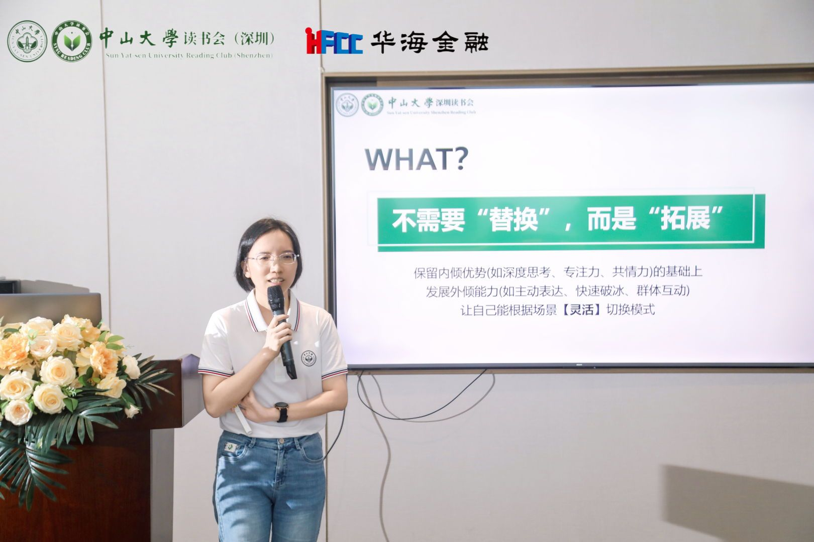
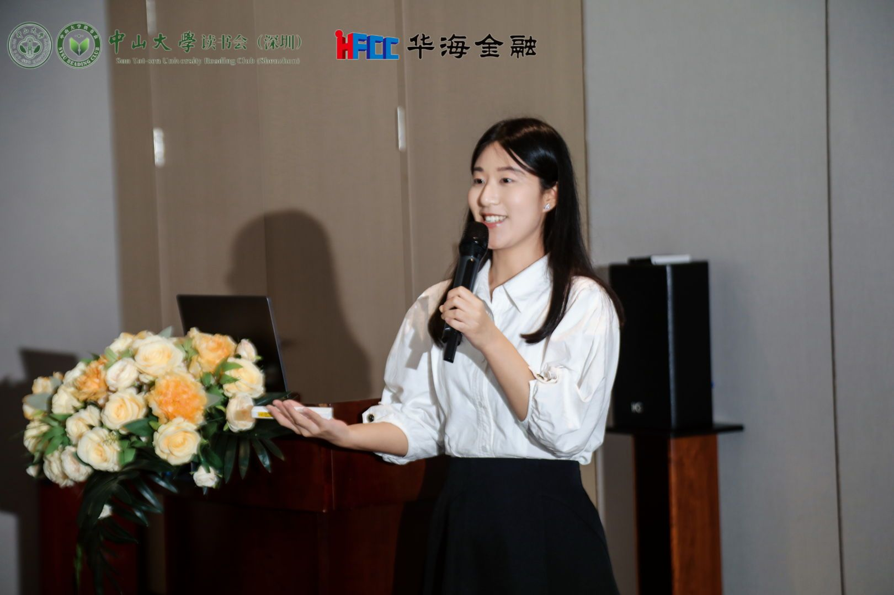
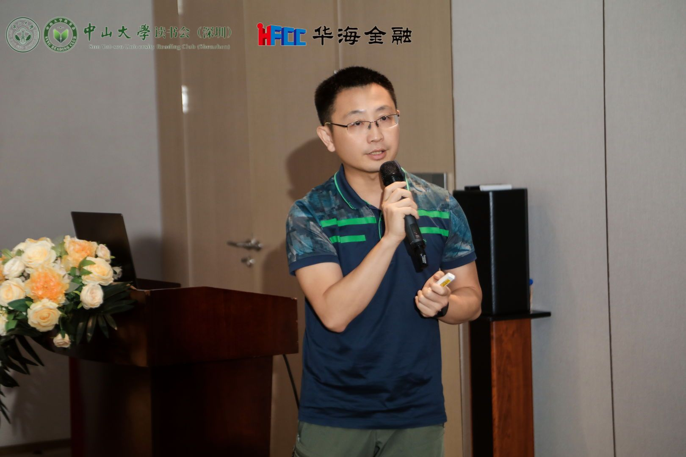
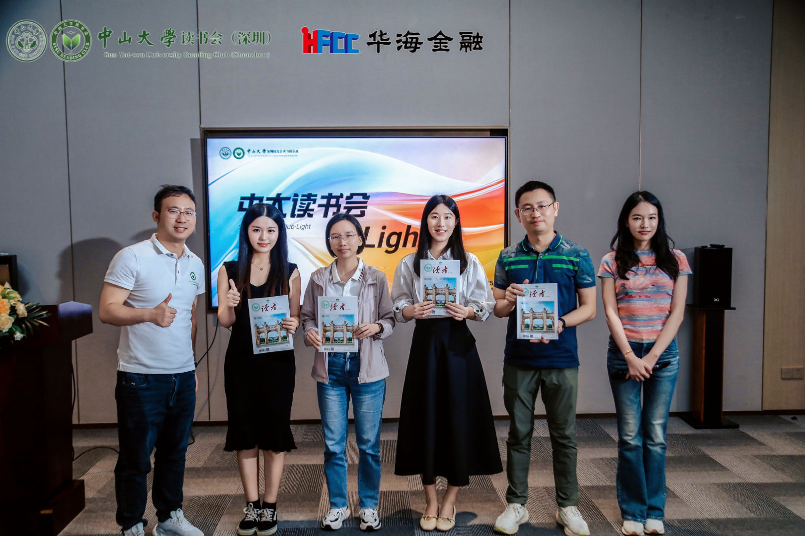

在一个台风天的午后，中大读书会·light第三期活动依然如约而至。本期我们将目光投向生命更本质的探索——何为好的人生？
这个时代，从不缺少告诉我们该如何生活的声音。要外向，要完美，要赢在起跑线……这些仿佛被公认的“人生脚本”，催生着许多人的焦虑与不安。但在中大读书会·light第三期活动现场，我们听到了另一种声音，看到了生命的更多可能。
三位中大校友，用他们与众不同的生命故事，共同书写了一个有力的答案：好的人生，不止一种脚本。真正的成功，是勇敢地书写属于自己的版本。
内向者的“外向生长”，无需改变，只需拓展
林慧师姐，一位有着17年经验的资深HR，曾是不折不扣的I人。她曾坚信专业能力是职场唯一的通行证，直到她发现，一直埋头苦干拼专业能力的自己，在关键的绩效评估中成了一个“被忽略”的人。
那一刻她明白，“是金子总会发光”的背后，还缺了一个前提：是金子，也得被光照到才能发光。

后来，领导的一句话点醒了她：“有些人只有半桶水，却能倒出一桶来，有些人有一桶水，却半桶也倒不出来。你的专业能力很强，但多人沟通场景的呈现表现不佳，你不觉得亏吗？”
“我们不需要切换自己，只需要做一些拓展。”
如今的她，没有强迫自己从I人变成E人，却多了一份让价值被看见的能力。她的故事告诉我们：性格底色无需改变，但能力的边界可以无限拓展。重要的不是变成谁，而是在保有核心优势的同时，为人生解锁新的可能。
放下完美主义枷锁，在“知行合一”中拥抱真实
作为第二位分享者，同时也是中大读书会公众号负责人的毛毛，这次把自己的成长故事带到了舞台上。曾经的她，总是努力去满足大家的期待，做一个“完美女孩”。直到大学面试时，一句“你很优秀，但你没有棱角”将她敲醒。
她才发现，自己一直按照完美主义的标准去生活，却丢失了真实的自我。于是，她开启了一场“向外看世界，向内找自己”的探索之路：在稻城亚丁的高反中看见自己的坚韧，在莫斯科地铁站的音乐声中学会聆听内心的声音。

而更大的转变，发生在“知行合一”的实践中。中大读书会让她找到了精神家园，更让她找到了志同道合的良师益友。她从一个习惯坐在后排的听众，变成了主动拿起话筒和笔的分享者。
在不断的自我探索后，她终于明白：“真正的成长，不是成为打磨掉棱角的完美女孩，而是拥抱那个不完美但勇敢的自己。”
不做鸡娃的教练，做“饭桌上的唐三藏”
第三位分享者杨宇鹏师兄，是两位“牛娃”的父亲——大女儿考入北京大学，小女儿为亚洲青少年壁球冠军。在“鸡娃”成为普遍焦虑的当下，他选择“退居二线”，成为孩子们的守护者。
师兄的育儿心法，融合了“陪伴-认知-心力”三重维度。陪伴是最长情的告白，他笑称自己是“饭桌上的唐三藏”，在每日最寻常的餐桌上，与孩子们建立起深刻的情感链接。

他把教育视为一个需要不断学习、提升认知的复杂系统，研究脑科学、运动康复，只为能更好地支持孩子；同时他看重心力的培养，心力才是支撑孩子穿越风雨的船桨。
父母最大的成就不在于孩子取得了多少成绩，而在于帮助他们找到真正热爱的事物，并守护他们为之奋斗的勇气。

“忠于自我，就是最好的人生脚本。”